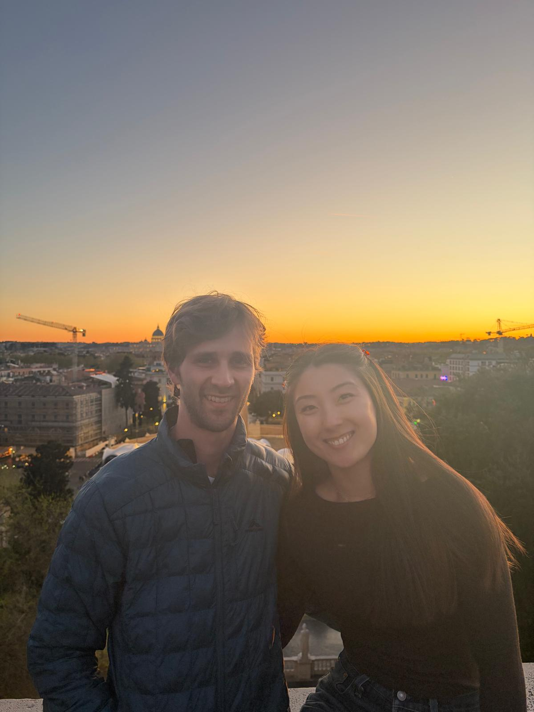
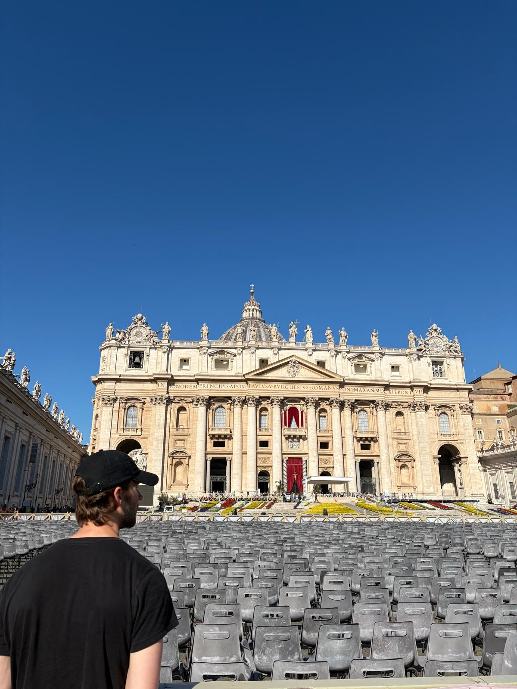
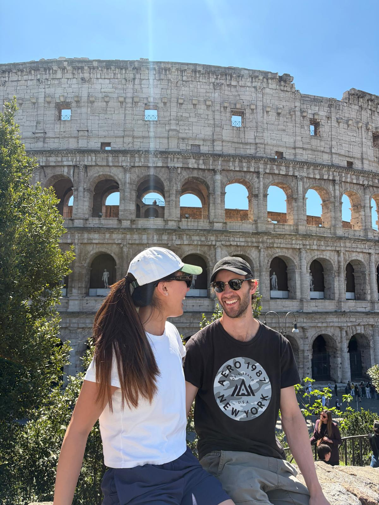

← Travel
Rome 2026
Stage 2 of Europe with James, Pat and Nat! This time we stayed in Italy but we went a bit further south.

6th April 2026
We roamed the streets of Rome (see what I did there?). The windy streets were spectacular, we went into a store a bought a beautifully crafted clock. Next we went and saw the Pantheon, the dome ceiling inside was magnificent and, like with many of the famous buildings in Europe, made me think how they built something like it in that era. When walking back we passed some ruins that had been made home by a group of cats. We saw people feeding the cats too! For sunset we went to a higher vantage point and saw the sun dipping below the vatican. The colours of the sunset were amazing, vivid orange and red were featured.

7th April 2026
Today we went to Vatican City. The lines to get entry into various parts were mind boggling! They encircled large parts of the courtyard. We say the famous guards wearing the bright orange and blue. Luckily we had got tickets with a tour and went straight in to the museum. The highlight of course was the Sistine Chapel and the artwork painted by Michelangelo. After we had dinner and some gelato, walking by the collisseum at night to see it properly lit up!

8th April 2026
We got up early to wait in line for tickets to the collisseum, we were not sure if we could get them but thanks to an early start we got in at the head of the line. We got access to the Forum Romanum and it was incredible the history behind the nruins and the society that they built. Large parts of it were intact and the scale of the some of the buildings was again super impressive. We moved on to the just as impressive collisseum and went inside to feel the atmosphere. It was a very historical day! It was our last night in Italy so of course we had to try some black truffle pasta which was yummy without being super special. It was a common theme across our time in Italy that we didn't always manage to find the best spots to eat.